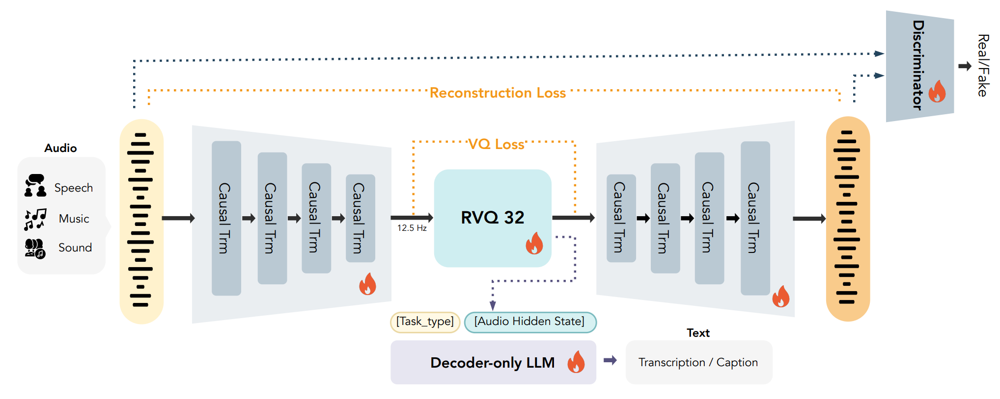
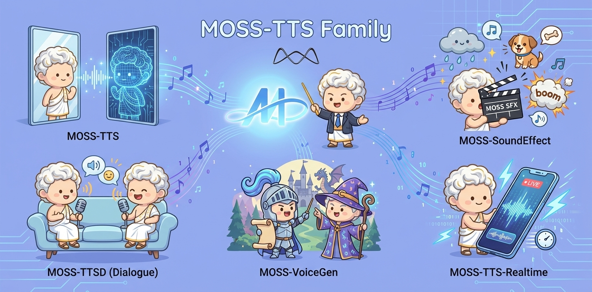
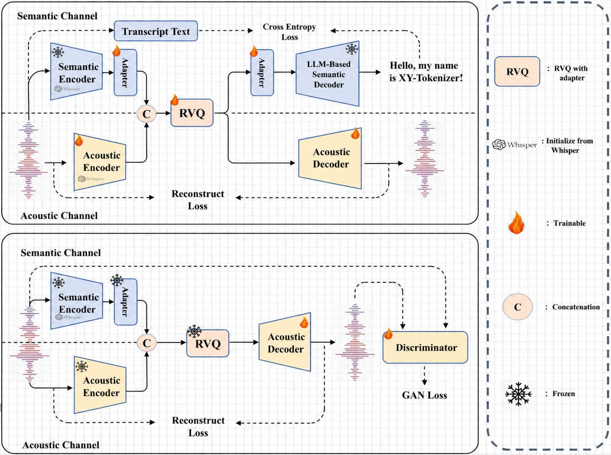
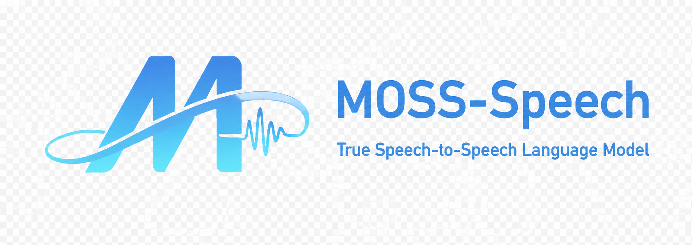
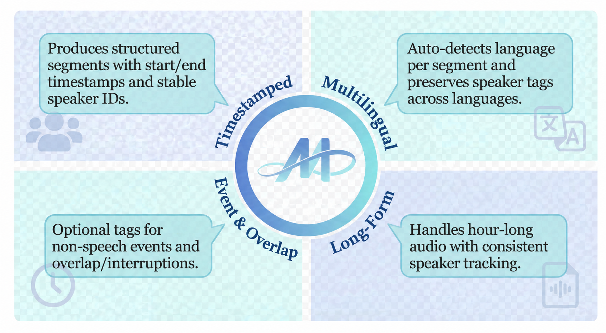
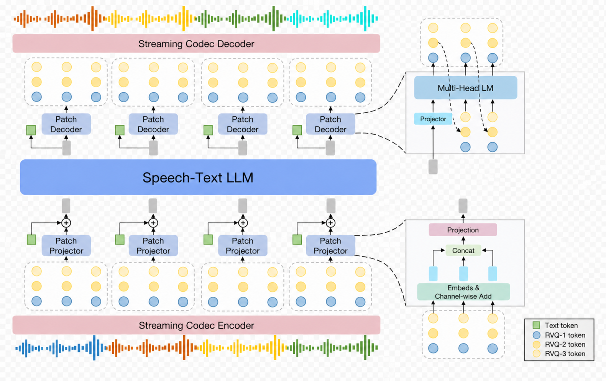
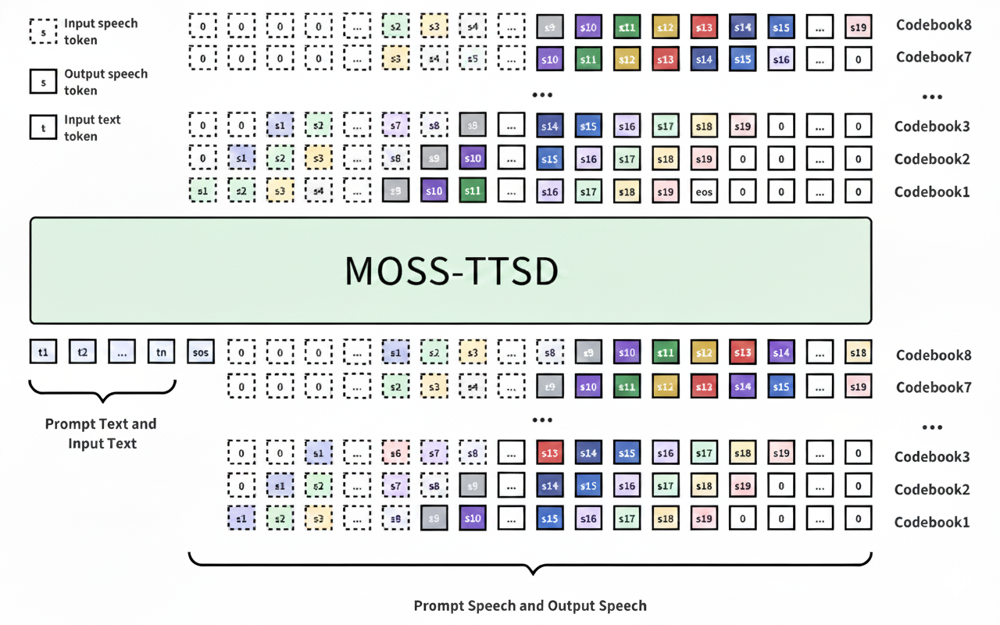

About Me
Hi! I am Yitian Gong, a master's student at the FudanNLP Lab at Fudan University, advised by Prof. Xipeng Qiu. I am currently interning at MOSI and the Shanghai Innovation Institute, where I work on multimodal foundation models, multimodal representation learning, speech generation, end-to-end speech models, and large-scale distributed training.
My research interests focus on Audio Foundation Models, Multimodal Representation Learning, and Large-Scale Distributed Training. I have worked on several speech and audio foundation model projects, including MOSS-TTS-Family, MOSS-Audio-Tokenizer, SpeechGPT2-preview, and XY-Tokenizer.
I expect to graduate in 2027 and am seeking Ph.D. and job opportunities in related research areas. I am also open to academic collaboration opportunities. Please feel free to contact me at ytgong24@m.fudan.edu.cn if you are interested.
News
Publications
-

MOSS-Audio-Tokenizer: Scaling Audio Tokenizers for Future Audio Foundation ModelsTechnical ReportMOSS-Audio-Tokenizer is a Causal Transformer-based audio tokenizer built on the CAT architecture. Trained on 3M hours of diverse audio, it supports streaming and variable bitrates, delivering SOTA reconstruction and strong performance in generation and understanding—serving as a unified interface for next-generation native audio language models. -

MOSS-TTS Technical ReportTechnical ReportMOSS‑TTS Family is an open‑source speech and sound generation model family from MOSI.AI and the OpenMOSS team. It is designed for high‑fidelity, high‑expressiveness, and complex real‑world scenarios, covering stable long‑form speech, multi‑speaker dialogue, voice/character design, environmental sound effects, and real‑time streaming TTS. -

XY-Tokenizer: Mitigating the Semantic-Acoustic Conflict in Low-Bitrate Speech CodecsACL 2026 MainXY-Tokenizer is a low-bitrate speech codec designed to balance semantic alignment and acoustic fidelity for speech-language modeling. Trained with a structured multi-stage, multi-task strategy, it mitigates the semantic-acoustic conflict in prior codecs while preserving fine-grained details for reconstruction, delivering strong speech understanding and generation performance alongside high-quality reconstruction in both clean and out-of-distribution settings. -

MOSS-Speech: Towards True Speech-to-Speech Models Without Text GuidanceTechnical ReportMOSS-Speech introduces true end-to-end speech interaction by directly generating speech without first producing text. It removes the text bottleneck of cascaded or text-guided systems while inheriting knowledge from pretrained text language models for more natural and efficient speech-to-speech dialogue. -

MOSS Transcribe Diarize Technical ReportTechnical ReportMOSS Transcribe Diarize is a unified multimodal large language model for end-to-end speaker-attributed, time-stamped transcription. With large-scale real-world training data and a 128k context window for long-form audio, it delivers strong robustness and outperforms state-of-the-art commercial systems across multiple benchmarks.
Projects
-

SpeechGPT2-previewSpeechGPT2-preview is an end-to-end real-time spoken interaction system trained on million-hour-scale speech data, designed for low-latency, interruptible, and human-like dialogue. It supports expressive style control, role-playing, and strong text-aligned capabilities such as tool use and knowledge integration, with current training focused on Chinese speech. -

MOSS-TTSD: Text to Spoken Dialogue GenerationMOSS-TTSD is a spoken dialogue generation model that enables expressive dialogue speech synthesis in both Chinese and English, supporting zero-shot multi-speaker voice cloning, voice event control, and long-form speech generation.
Education
Fudan University
M.S. in Computer Science and Technology, advised by Prof. Xipeng Qiu.
Sept. 2024 - Jun. 2027 expected
University of Jinan
B.S. in Data Science and Big Data Technology.
Sept. 2020 - Jun. 2024
Experience
模思智能
Research Intern. Research and engineering on multimodal foundation models, speech tokenizers, speech understanding, speech generation, and large-scale distributed training.
Apr. 2025 - present
Shanghai Innovation Institute (SII)
Research Intern. Research and engineering on multimodal foundation models, speech tokenizers, speech understanding, speech generation, and large-scale distributed training.
Apr. 2025 - present
OpenMOSS
Member of OpenMOSS.
Apr. 2024 - present
Honors
Skills
Programming: C, Python.
Deep Learning: PyTorch, Transformers, Megatron, large-scale distributed training.
Speech: SpeechTokenizer, VAE, ASR, TTS, audio tokenization.
Languages: Mandarin, Wu Chinese, English.